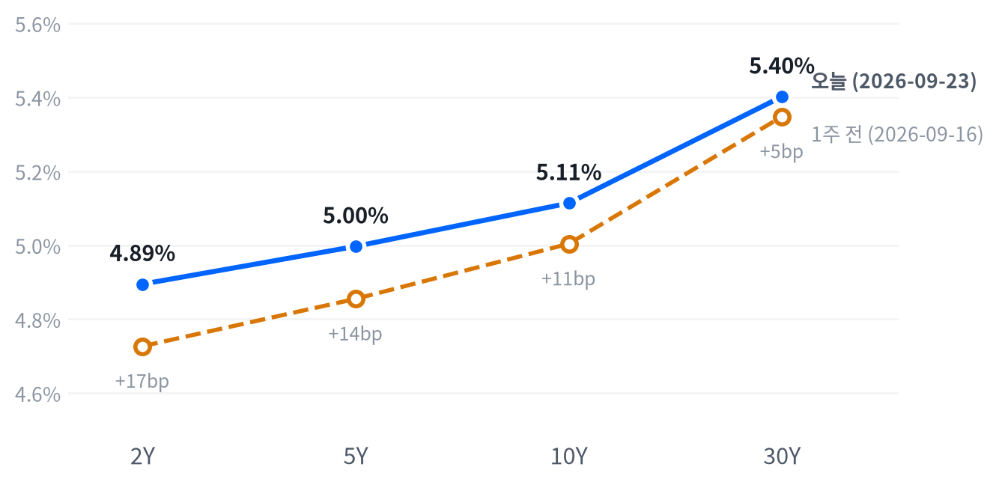

수요일 뉴욕증시는 국채 시장이 주인공이었습니다. 9월 플래시 PMI가 예상을 크게 웃돌고 5년물 국채 입찰 수요까지 부진하자 10년물 금리가 하루 만에 급등해 최근 2년(504거래일) 가운데 가장 높은 자리에 올라섰습니다(상세 수치는 아래 전략 코멘트 참고).
다우존스(-1.03%)를 필두로 S&P500(-0.76%)·나스닥(-0.69%)·러셀2000(-1.28%)이 일제히 밀렸고, 달러는 강세인데 원화만 나 홀로 초강세를 보이는 이례적인 통화 갈림도 함께 나타났습니다.
오늘 하루를 지배한 것은 국채 시장이었습니다. 9월 미국 플래시 종합 PMI가 58.4로 튀어 오르고 5년물 국채 입찰 수요까지 예년보다 약하게 나오자, 10년물 금리가 하루 만에 14.7bp 급등해 5.114%로 마감했습니다. 이 급등이 주식·달러·금을 동시에 흔들었습니다.
이 금리 급등을 성장 낙관(PMI 서프라이즈)과 물가 재점화 우려 중 어느 쪽이 더 밀었는지는 지금 갖고 있는 자료로는 가리지 못합니다. 실질금리와 기대인플레이션을 가르는 지표가 하루 시차를 두고 갱신되기 때문에 오늘 급등분의 내역을 아직 쪼갤 수 없고, 시장이 반영한 10월 추가 인상 확률도 매체마다 49%에서 70%까지 벌어져 있어 단일한 기대치로 확정할 수 없습니다. 다만 신용스프레드가 오히려 좁혀졌다는 점을 보면, 이번 충격은 성장 공포보다 정책·수급 재가격화에 가까워 보입니다.
이 구분이 가려지기 전까지는 듀레이션이 긴 자산(장기채·리츠·유틸리티)에 대한 판단을 단정하기보다 관찰 단계로 남겨두는 편이 합리적입니다. 확인 시계는 짧습니다 — 내일 실질금리 지표가 갱신되면 오늘 급등분의 실질금리·기대인플레 비중이 드러나고, 9월24~25일 국채 입찰과 신규주택판매·미시간대 소비자심리, 10월28일 FOMC까지가 다음 확인 구간입니다.
내일 갱신되는 실질금리가 오늘 급등분의 대부분을 설명하면(성장·기간프리미엄(만기가 길수록 더 얹어 받는 값) 쪽) 정책·수급 재가격화 해석이 힘을 받고, 반대로 기대인플레이션 쪽 기여가 두드러지면 물가 재가속 우려가 다시 주식·채권 동반 약세의 근거로 돌아옵니다. 신용스프레드가 방향을 바꿔 벌어지기 시작하는 것도 이 판단을 뒤집을 신호입니다.
| 지수 | 종가 | 등락률 | 기준일 |
|---|---|---|---|
| 닛케이225 | 65,018.95 | +1.38% | 9월 18일 |
| 항셍 | 25,042.71 | +1.18% | 9월 21일 |
| 상해종합 | 3,949.91 | +0.97% | 9월 21일 |
| DAX | 25,575.01 | +1.07% | 9월 21일 |
| FTSE100 | 10,739.00 | +0.75% | 9월 21일 |
| 유로스톡스50 | 6,318.20 | +1.31% | 9월 21일 |
| VIX | 15.18 | +2.09% | 9월 23일 |
아시아 증시는 미국과 엇갈렸다. 닛케이225(9월 18일 마감 기준 +1.38%)·항셍(9월21일 +1.18%)·상해종합(+0.97%)이 각각 전 마감 대비 상승했다.
유럽도 미국과 엇갈렸다 — DAX(+1.07%)·FTSE100(+0.75%)·유로스톡스50(+1.31%)이 나란히 올랐다. 두 지역 모두 지역 안에서는 갈리지 않고 고르게 상승했지만, 그 뒤에 이어진 미국장은 국채 급등에 3대 지수가 일제히 밀리며 정반대 방향으로 움직였다.
야간 선물은 새벽 2:30(ET) 무렵 고점을 찍은 뒤 미끄러졌다. 선물(ES)은 고점 7,843에서 오전 8:00 저점 7,819까지 밀려 고저 폭이 0.31%에 그쳤고, 나스닥 선물(NQ)도 같은 2:30 고점(31,095)에서 7:30 저점(30,911)까지 밀려 폭 0.6%를 기록했다. 현물 갭은 대형주 -0.04%·나스닥 +0.32%·러셀2000 +0.32%로 사실상 보합 출발이었다.
세 지수 모두 정규장 개장(09:30 ET)이 그날의 고점이었고 이후 되돌리지 못한 채 저점권에서 마감했다 — 지수·나스닥·러셀2000의 종가 위치가 각각 상위 20·21·1퍼센타일로, 최근 2,253거래일 종가 위치 이력에서 상위 84.7·하위 25.7 분위를 저점권/고점권 경계로 다시 잰 기준으로도 뚜렷한 저점권 마감이다. 특히 러셀2000은 오후 3:30까지 저점을 계속 갱신하며 반등 기회조차 없었다.
이날 시장을 움직인 것은 국채였다. 9월 플래시 PMI 서프라이즈와 5년물 입찰 수요 부진이 겹치며 10년물이 급등했고(수치는 위 전략 코멘트 참고), 이 충격이 정규장 내내 주식을 눌렀다.
반대로 유가는 아시아 새벽(00:30 ET) 저점(88.71달러)에서 정규장 마감 무렵(16:30 ET) 고점(93.03달러, 개장 대비 +4.1%)까지 장중 내내 오르며 인플레이션 서사를 거들었지만, 전일 종가가 이미 더 높았던 탓에 정산 기준으로는 -2.56% 하락 마감이라는 반대 신호를 냈다. 시간외로는 결산 발표나 별도 이벤트가 확인되지 않았다.
| 지수 | 종가 | 등락률 |
|---|---|---|
| S&P500 가치주 | 231.92 | -0.66% |
| 나스닥 | 26,936.04 | -0.69% |
| S&P500 | 7,706.03 | -0.76% |
| S&P500 성장주 | 142.21 | -0.81% |
| 다우존스 | 51,511.59 | -1.03% |
| 러셀2000 | 2,838.66 | -1.28% |
| 섹터 | 등락률 |
|---|---|
| 소재 | +1.15% |
| 에너지 | +0.96% |
| 필수소비재 | +0.62% |
| 기술 | +0.25% |
| 산업재 | +0.07% |
| 헬스케어 | -0.12% |
| 금융 | -0.47% |
| 경기소비재 | -1.41% |
| 부동산 | -1.76% |
| 커뮤니케이션 | -1.91% |
| 유틸리티 | -2.24% |
S&P500(7,706)은 최근 2년(504거래일) 가운데 이보다 높았던 날이 16일뿐인 자리이고, 나스닥(26,936)은 이보다 높았던 날이 나흘뿐인 자리라 오늘 하락에도 여전히 최상단 구간이다. 변동성지수(VIX)도 15.18로 낮은 쪽 15% 안에 머물러 있어, 오늘의 하락을 공포 국면 전환으로 읽을 근거는 아직 없다.
러셀2000은 -1.28%로 평소 하루 움직임의 1.56배에 달해 «큼» 밴드에 들었고 세 지수 중 유일하게 이 문턱을 넘었다. 소형주는 변동금리 부채 비중이 커 조달비용 상승에 더 예민하게 반응하고, 대형 기술주 같은 완충판도 없어 10년물 급등의 충격을 가장 크게 받은 것으로 보인다.
오늘 지수 하락(-0.76%) 가운데 금융이 -0.27%p로 가장 크게 끌어내렸고 커뮤니케이션서비스(-0.25%p)·경기소비재(-0.18%p)가 뒤를 이었다. 유일하게 오른 대형 섹터인 기술은 +0.09%p 보탰을 뿐 하락을 막기에는 역부족이었다. 이 여덟 섹터로 설명되지 않는 부분은 -0.07%p로 작아, 오늘의 하락은 업종 전반에 고르게 퍼진 것에 가깝다(소재·부동산은 회귀로 식별되지 않아 표에서 뺐다).
나스닥은 13:00 저점(26,874, 개장 대비 -1.23%)까지 밀렸다가 소폭 되올라 26,944 근방에서 마쳤고, S&P500도 같은 13:00 저점(7,695, -0.86%) 이후 비슷하게 반등했다. 반면 러셀2000은 15:30까지 저점을 계속 갱신하며 반등 없이 2,839 근방에서 마감해 세 지수 중 가장 약했다. 엔비디아는 09:30 고점(228.95) 이후 12:30 저점(224.02, -1.78%)까지 밀렸다가 225.51로 마감했다.
금융(-0.47%)은 전일(-1.97%) 대비 오히려 진정됐는데, 이는 순전히 금리 되돌림이라기보다 메타의 신규 AI 개인비서 '뮤즈'가 증권·자산관리업을 대체할 수 있다는 산업 특유의 뉴스가 전일부터 이어진 은행·브로커리지 약세를 상당 부분 설명한다는 보도와 맞물려 있다 — 이 갈래는 금리와 무관한 원인이라는 뜻이고, 아래 시장 판단과 복기에서 더 다룬다. 유틸리티(-2.24%)·부동산(-1.76%)·커뮤니케이션서비스(-1.91%)는 전형적인 금리 민감 섹터답게 국채 급등일에 가장 크게 밀렸다.
| 만기 | 종가 | 전일比(bp) | 1주 전 | 주간 변화(bp) |
|---|---|---|---|---|
| 2Y | 4.895% | +14.4 | 4.727% | +16.8 |
| 5Y | 4.997% | +15.5 | 4.855% | +14.2 |
| 10Y | 5.114% | +14.7 | 5.004% | +11.0 |
| 30Y | 5.402% | +9.9 | 5.348% | +5.4 |

10년물(5.114%)과 30년물(5.402%) 모두 이 구간 들어 오늘이 가장 높은 자리다 — 이보다 높았던 날이 하루도 없다. 이번 사이클에서 9월16일 FOMC 인상 이후 형성된 레인지 상단을 오늘 하루 만에 뚫고 올라선 셈이다.
10년물·30년물 모두 평소 하루 움직임의 3.9배·3.0배에 달해 «매우 큼» 밴드에 들었다. 9월 미국 플래시 종합 PMI가 58.4로 튀어 올라 52개월 만의 최고 수준을 기록한 것이 성장 서프라이즈 촉매였다.
같은 날 진행된 5년물 국채 입찰(700억달러)도 응찰배율 2.21배로 이날 함께 열린 2년물(2.63배)·17주물(2.81배)보다 낮았다. 간접낙찰 비중 역시 47.0%로 2년물(59.1%)보다 낮아 수요가 상대적으로 약했다는 점이 수급 쪽 설명을 보탠다.
오늘 하루는 2Y·5Y·10Y가 14~16bp로 거의 같은 폭으로 오른 반면 30Y만 9.9bp로 덜 올랐다. 그 결과 5s30s 스프레드가 -5.6bp(40.5bp) 플래트닝됐다.
2년물과 10년물의 격차(2s10s)는 21.9bp로, 전 만기가 같은 기준일(네이버, 9월23일)이라 그대로 오늘의 스프레드로 쓸 수 있다. 9월16일 FOMC 인상일(27.7bp)과 비교하면 그 사이 2년물이 10년물보다 더 올라(+16.8bp 대 +11.0bp) 5.8bp 좁혀진 베어 플래트닝이 이어지고 있다.
다만 실질금리와 기대인플레이션의 하루치 기여는 오늘 자료로 정확히 쪼갤 수 없다. FRED 기준 10년 실질금리·명목금리는 아직 9월22일치까지만 갱신돼 있어(하루 시차), 그 시점 기준으로는 10년물 하루 변화가 사실상 0bp이면서 실질금리 +1bp·기대인플레이션 -1bp로 상쇄된 것으로 나온다 — 이는 오늘의 14.7bp 급등과는 다른 날의 그림이라 그대로 겹쳐 읽을 수 없다는 뜻이다. 주간으로는 10년물 명목금리가 -4bp였던 반면 실질금리는 +1bp, 기대인플레이션은 -5bp로 갈렸는데, 이 역시 하루 전(9월22일)까지의 관측이라 오늘의 스파이크를 담지 못한다.
10년 기간프리미엄은 9월18일 기준 0.96%포인트로 하루 +2bp 올랐다 — 관측 구간은 다르지만 같은 방향으로 움직인 점은 이번 금리 급등에 불확실성 프리미엄 확대가 섞여 있을 가능성을 검토할 단서다. 신용시장은 진정세를 유지했다 — 하이일드 스프레드는 9월22일 기준 2.68%포인트로 5일간 8bp 좁혀졌고 투자등급 스프레드도 0.77%포인트로 3bp 좁혀져, 이번 충격이 아직 성장 패닉으로 번지는 신호는 보이지 않는다.
앞의 5년치 잡음을 걷어낸 5년 뒤 5년 금리는 9월 22일 기준 5.09%로 전일 대비 변화가 없었다. 실질금리로는 2.75%가 내재돼 있어, 이 값이 시장의 성장·물가 기대만이 아니라 위험 프리미엄까지 함께 담긴 값이라는 점을 감안하면 — 아직 느리게 움직이는 구간이라는 뜻으로 읽을 수 있다.
듀레이션이 긴 채권일수록 같은 금리 변화에도 가격이 더 크게 움직인다 — 오늘처럼 커브 전체가 한 방향으로 튀는 날은 30년물처럼 만기가 긴 구간의 가격 충격이 가장 크다는 뜻이다.
| 통화쌍 | 종가 | 등락률 |
|---|---|---|
| DXY | 101.11 | +0.68% |
| USD/KRW | 1,350.36 | -1.70% |
| USD/JPY | 157.46 | +0.06% |
| EUR/USD | 1.1448 | -0.15% |
달러지수(DXY)는 101.11로 최근 2년의 한가운데쯤에 머물러 있다. 반면 원화는 1,350원대로 같은 기간 가운데 이보다 낮았던 날(달러 대비 원화가 더 강했던 날)이 12일뿐인 자리다 — 달러 자체는 평범한 위치인데 원화만 유독 강한 자리에 서 있는 셈이다.
DXY는 오늘 +0.68%로 평소 하루 움직임의 2.34배에 달해 «큼» 밴드에 들었다. 10년물 금리가 하루 만에 14.7bp 튀며 미국과 다른 선진국의 금리 격차가 벌어졌고, 이것이 달러 전반에 힘을 보탠 것으로 보인다. 반면 USD/KRW는 -1.70%로 평소의 2.84배(«매우 큼»)에 달해 정반대로 튀었는데, 그 구체적 배경(반도체 수출 호조 서사 등)은 출처가 특정되는 수치까지는 확인하지 못해 가설 수준으로만 남겨둔다 — 다음 확인은 관세청 수출 통계나 역외 자금흐름 지표가 될 수 있다.
엔/달러는 하루 변화가 +0.06%로 사실상 멈춰 있었다. 다만 24시간 거래되는 외환시장 특성상 장중 기록 시각이 자정 전후(01:00 ET 저점 157.43엔)와 저녁(18:00 ET 고점 158.40엔)으로 시차가 있어, 이 장중 궤적을 오늘 하루의 등락률과 그대로 겹쳐 읽지 않는 편이 안전하다.
| 품목 | 종가 | 등락률 |
|---|---|---|
| WTI | $92.17 | -2.56% |
| Brent | $97.86 | -1.40% |
| 천연가스 | $3.17 | +6.91% |
| 금 | $4,321.70 | -1.25% |
WTI(92.17달러)는 같은 길이의 구간 가운데 높은 쪽 13% 안에 드는 자리이고, 금(4,322달러)은 그 한가운데쯤이다. 둘 다 오늘 하락에도 최근 흐름의 연장선에 있는 위치이며, 지난 한 달 새 형성된 레인지를 크게 벗어나지 않은 채 등락을 반복하고 있다.
WTI와 금 모두 오늘 등락률은 평소 하루 움직임의 0.8~0.9배 수준(«보통» 밴드)이라 이례적인 크기는 아니다. WTI는 장중 궤적이 정산 등락률과 반대 방향이었다는 점이 눈에 띈다 — 아시아 새벽(00:30 ET) 저점(88.71달러)을 찍은 뒤 정규장 마감 무렵(16:30 ET) 고점(93.03달러, 개장 대비 +4.1%)까지 꾸준히 올랐지만, 전일 종가가 이미 더 높았던 탓에 정산 기준으로는 -2.56% 하락으로 마감했다. 이 장중 강세가 오늘 국채금리를 밀어올린 인플레이션 서사의 한 갈래로 함께 거론됐다.
금은 자정(00:00 ET) 고점(4,384달러) 이후 오후 1:30(ET) 저점(4,311달러, -1.57%)까지 밀렸다가 소폭 되올라 마감했다. 금과 금리의 관계는 최근 60세션 기준 반대로 움직이는 흐름(느슨하게)이 이어지고 있어, 오늘 10년물 급등이 금 약세의 배경 중 하나로 꼽힐 수 있다.
미국 경기 국면은 성장·물가 모두 둔화 방향인 연착륙을 18영업일째 유지한다. 오늘도 새로 나온 헤드라인 경제지표가 없어 성장(-0.391)·물가(-0.526) 두 축 점수가 어제와 같아 국면이 움직이지 않았다. 국면을 다시 열 수 있는 다음 계기는 9월29일 JOLTS, 9월30일 PCE 물가, 10월2일 고용상황처럼 다음 주에 몰려 있는 신규 지표 발표다.
고용은 어제와 같은 보합이다. 고용축 +0.217
| 지표 | Actual | Forecast | Previous | 발표일 | 컨센 대비 | 직전 대비 | 추세 |
|---|---|---|---|---|---|---|---|
| 구인건수(JOLTS, 7월) | 7,271K | — | 7,182K | 2026-07 기준월 | 개선 | 개선(미미) · 3개월 평균 7,131K → 7,330K | |
| 신규 실업수당 청구(9월12일 마감 주간) | 196,000 | — | 206,000 | 9월12일 마감 주간 | 개선 | 보합 · 4주 평균 204K → 203K | |
| 신규 청구 4주 평균 | 203,250 | — | 206,000 | 9월12일 마감 주간 | 개선 | 악화(미미) · 4주 평균 202K → 206K | |
| 계속 실업수당 청구(9월5일 마감 주간) | 1,730,000 | — | 1,769,000 | 9월5일 마감 주간 | 개선 | 개선(뚜렷) · 4주 평균 1,788K → 1,761K | |
| 비농업 고용 변화(8월) | +162K | — | +21K | 2026-08 기준월 | 개선 | 악화(완만) · 3개월 평균 +142K → +71K | |
| 실업률(8월) | 4.1% | — | 4.1% | 2026-08 기준월 | 보합 | 개선(완만) · 3개월 평균 4.30% → 4.13% | |
| 평균시간당임금 MoM(8월) | +0.27% | — | +0.16% | 2026-08 기준월 | 개선 | 개선(완만) · 3개월 평균 +0.20% → +0.23% |
생산·활동은 어제와 같은 완만한 악화다. 다만 오늘 새로 나온 9월 플래시 종합 PMI(58.4)는 이 축의 최근 FRED 지표들과 반대로 뚜렷한 확장을 가리켜, 이 갈림이 오늘 국채 급등의 배경 중 하나로 꼽힌다. 생산·활동축 -0.510
| 지표 | Actual | Forecast | Previous | 발표일 | 컨센 대비 | 직전 대비 | 추세 |
|---|---|---|---|---|---|---|---|
| 산업생산 MoM(8월) | +0.02% | — | +0.20% | 2026-08 기준월 | 악화 | 보합 · 3개월 평균 +0.24% → +0.14% | |
| 내구재주문 MoM(7월) | +1.08% | — | +0.58% | 2026-07 기준월 | 개선 | 악화(뚜렷) · 3개월 평균 +2.90% → -0.78% | |
| 신규주택판매(7월) | 607K | — | 678K | 2026-07 기준월 | 악화 | 보합 · 3개월 평균 643K → 638K | |
| 기존주택판매(8월) | 398.0만 | — | 406.0만 | 2026-08 기준월 | 악화 | 악화(미미) · 3개월 평균 4,080K → 4,057K | |
| 실질GDP QoQ 연율(26년 2분기) | +1.5% | — | +2.1% | 2026Q2 기준 | 악화 | — | |
| S&P Global 美 플래시 종합PMI(9월) | 58.4 | — | 56.0(8월) | 2026-09-23 | — | — | |
| 〃 제조업(9월) | 57.0 | — | 53.9(8월) | 2026-09-23 | — | — | |
| 〃 서비스업(9월) | 58.7 | — | 54.6(8월) | 2026-09-23 | — | — |
소비는 어제와 같은 완만한 악화다. 소비축 -0.879
| 지표 | Actual | Forecast | Previous | 발표일 | 컨센 대비 | 직전 대비 | 추세 |
|---|---|---|---|---|---|---|---|
| 소매판매 MoM(8월) | +1.24% | — | -0.54% | 2026-08 기준월 | 개선 | 악화(뚜렷) · 3개월 평균 +1.11% → +0.34% | |
| 미시간대 소비자심리(7월) | 55.2 | — | 49.5 | 2026-07 기준월 | 개선 | 악화(완만) · 3개월 평균 53.2 → 49.8 |
물가는 어제와 같은 완만한 둔화다. 물가축 -0.526
| 지표 | Actual | Forecast | Previous | 발표일 | 컨센 대비 | 직전 대비 | 추세 |
|---|---|---|---|---|---|---|---|
| CPI YoY(8월) | 3.71% | — | 3.54% | 2026-08 기준월 | 상승 | 교착 · 3개월 평균 3.85% → 3.66% | |
| CPI MoM(8월) | +0.40% | — | +0.07% | 2026-08 기준월 | 상승 | 둔화(뚜렷) · 3개월 평균 +0.66% → +0.02% | |
| Core CPI YoY(8월) | 2.76% | — | 2.79% | 2026-08 기준월 | 하락 | 교착 · 3개월 평균 2.87% → 2.79% | |
| Core CPI MoM(8월) | +0.29% | — | +0.22% | 2026-08 기준월 | 상승 | 둔화(완만) · 3개월 평균 +0.26% → +0.16% | |
| PPI 최종수요 MoM(8월) | +0.40% | — | +0.07% | 2026-08 기준월 | 상승 | 둔화(뚜렷) · 3개월 평균 +0.79% → +0.12% | |
| PCE 물가 YoY(7월) | 3.70% | — | 3.72% | 2026-07 기준월 | 하락 | 재가속(완만) · 3개월 평균 3.41% → 3.84% | |
| Core PCE YoY(7월) | 3.34% | — | 3.34% | 2026-07 기준월 | 보합 | 재가속(미미) · 3개월 평균 3.21% → 3.38% | |
| 미시간대 1년 기대인플레(7월) | 4.2% | — | 4.6% | 2026-07 기준월 | 하락 | 재가속(완만) · 3개월 평균 3.97% → 4.53% |
직전 대비는 Actual을 Previous와 비교한 것이고, 추세는 최근 3개월 평균을 그 앞 3개월 평균과 비교한 것입니다(주간 실업수당 청구는 4주 평균끼리). 추세의 세기는 그 지표가 평소 움직이는 폭에 견준 크기이고, 작은 변화는 보합으로 봅니다. 분기 지표인 GDP는 두 비교가 같은 숫자를 보므로 직전 대비만 싣습니다.
정책 판단은 인상 리스크 우위를 유지한다. 9월16일 FOMC는 이미 25bp를 올렸고 사전 반영 확률은 91%였다. 다음 회의(10월28일)의 추가 인상 가능성이 시장 서사의 중심이지만, CME FedWatch로 승인된 원장 확률이 오늘도 갱신되지 않아 단일 수치로 제시하지 않는다 — 복수 매체가 보도한 10월 추가 인상 확률은 49%에서 70%까지 벌어져 있다.
이 판단은 다음 FOMC 성명·기자회견에서 이미 확인된 인상 신호를 되돌리는 언급이 나오거나, 물가·고용 지표가 예상보다 뚜렷하게 냉각되면 뒤집힌다.
일곱 자산군의 경로 판단은 전일과 같다 — 오늘도 새로 나온 지표가 없어 옮길 근거가 없었다.
스토리지·메모리주 안에서도 방향이 갈렸다. 시게이트(+5.30%)·웨스턴디지털(+1.96%)이 뚜렷이 오른 반면 마이크론은 -2.22%로 홀로 밀렸다 — 동일 업종인데도 국채 급등에 대한 반응이 엇갈렸다는 뜻이다. 삼성전자(+3.25%)·SK하이닉스(+1.20%)도 국내 판에서 강세를 이어가, 메모리 바스켓 전체로는 순저항력을 유지했다.
AI 인프라 쪽은 반대로 광범위하게 약했다 — 코히런트(-3.15%)가 가장 크게 밀렸고 GE버노바(+0.59%)만 홀로 올랐다. 커뮤니케이션서비스·금융 섹터의 약세에는 메타의 신규 AI 개인비서 '뮤즈'가 증권·자문업을 대체할 수 있다는 산업 특유 뉴스도 겹쳐 있어, 오늘의 약세를 전부 금리 탓으로만 돌리기는 어렵다.
| 종목 | 종가 | 등락률 | 기준일 |
|---|---|---|---|
| Micron | $1,071.88 | -2.22% | 9월 23일 |
| Western Digital | $473.69 | +1.96% | 9월 23일 |
| Seagate | $923.86 | +5.30% | 9월 23일 |
| Nvidia | $225.51 | -1.47% | 9월 23일 |
| 삼성전자 | 285,500원 | +3.25% | 9월 23일 |
| SK하이닉스 | 1,862,000원 | +1.20% | 9월 23일 |
메모리 바스켓은 최근 20거래일 초과수익이 시장 대비 +13.6%p였는데, 그중 반도체 축이 +15.6%p로 초과수익을 사실상 전부 설명한다(시장 민감도는 2.26으로 높다). 성장−가치·대형−소형 두 축은 창 길이(60거래일과 252거래일)에 따라 기여 부호가 뒤집혀 인용하지 않는다 — 이 세 축으로 설명되지 않는 몫은 +0.9%p로 작다.
오늘은 마이크론(-2.22%)만 하락하고 스토리지 노출이 큰 웨스턴디지털(+1.96%)·시게이트(+5.30%), 국내 메모리 2사(삼성전자 +3.25%·SK하이닉스 +1.20%)는 강세를 보여 단일한 "메모리 랠리"로 뭉뚱그리기 어려운 하루였다. 오늘 날짜에 특정된 새 공급·가격 뉴스는 확인되지 않아, 이 갈림은 새 촉매보다는 국채 급등이라는 매크로 충격에 대한 종목별 민감도 차이에 가까워 보인다.
메모리·스토리지 사이클 자체는 매크로 판단상 구조적으로 우호적인 경로다 — 소비축 부진과 무관하게 AI 데이터센터 투자가 D램·낸드 수급을 견인하는 독립 변수라는 것이 전달경로의 전제다. 이 전제가 실제로 성립하는지는 아래 시장 판단과 복기에서 다루는 디커플링 가설의 핵심 관찰 대상이기도 하다.
| 종목 | 분야 | 종가 | 등락률 | 기준일 |
|---|---|---|---|---|
| Marvell | 데이터센터 커넥티비티 | $260.90 | -0.56% | 9월 23일 |
| Coherent | 광통신 | $300.60 | -3.15% | 9월 23일 |
| Lumentum | 광통신 | $937.00 | -0.92% | 9월 23일 |
| GE Vernova | 전력 | $951.82 | +0.59% | 9월 23일 |
| Vertiv | 냉각·전력관리 | $248.78 | -0.83% | 9월 23일 |
AI 인프라 바스켓은 최근 20거래일 초과수익이 시장 대비 +7.7%p였다. 반도체 축이 +11.6%p로 가장 크게 보탰고, 대형−소형 축(소형주 쏠림)이 -9.9%p로 깎아먹었으며, 성장−가치 축은 +3.9%p를 보탰다 — 세 축 모두 창 길이를 바꿔도 부호가 유지돼 인용할 만하다. 이 세 축으로 설명되지 않는 몫은 +2.0%p로 작지만, 시장 민감도가 3.12로 꽤 높아 남는 몫이 실제보다 부풀어 보일 수 있다는 점은 감안해야 한다.
오늘은 GE버노바(+0.59%)를 제외하고 광범위하게 하락했다 — 코히런트(-3.15%)가 가장 크게 밀렸다. 오늘 날짜에 특정된 개별 뉴스는 확인되지 않았고, 국채 급등에 따른 고밸류에이션·장기 듀레이션 성장주 전반의 조정과 함께 움직인 것으로 보인다.
메모리 바스켓과 달리 AI 인프라는 오늘 금리 충격에 둔감하지 않았다 — 마벨·코히런트·루멘텀·버티브가 나란히 밀렸다. 이 차이는 아래 시장 판단과 복기에서 다루는 디커플링 가설이 오늘 완전히 지지되지 못한 핵심 근거이기도 하다. AI 인프라의 매크로 전달경로는 중립이다 — 캐펙스 사이클 자체는 구조적으로 우호적이지만 장기금리가 높은 구간에서는 할인율 상승이 이를 상쇄한다.
| 종목 | 종가 | 등락률 | 기준일 |
|---|---|---|---|
| Murata | ¥7,763 | +4.47% | 9월 18일 |
| Samsung E-M | 1,507,000원 | +1.41% | 9월 23일 |
| Taiyo Yuden | ¥9,375 | +4.17% | 9월 18일 |
| Yageo | NT$573 | +0.35% | 9월 23일 |
| Walsin | NT$306 | -1.61% | 9월 23일 |
| Holy Stone | NT$768 | -1.54% | 9월 23일 |
| Sanhuan | CNY 130.40 | +0.71% | 9월 23일 |
| Fenghua | CNY 58.74 | +1.71% | 9월 23일 |
삼성전기(+1.41%)·야게오(+0.35%)·싼환(+0.71%)·펑화(+1.71%)는 오르고 월신(-1.61%)·홀리스톤(-1.54%)은 내려 대만계 안에서도 방향이 갈렸다. 이날 유동성 있는 넷(무라타·삼성전기·다이요유덴·야게오) 관련 개별 뉴스는 확인되지 않았다.
MLCC와 메모리는 AI 데이터센터 캐펙스라는 같은 상위 변수를 공유한다. 오늘처럼 메모리 바스켓이 순저항력을 유지한 날 MLCC도 대체로 버틴 것은 이 공통 요인과 방향이 맞지만, 하루치 관측만으로 그 연결을 확정하기는 이르다. 판단 시계는 메모리와 마찬가지로 3~6개월 구조이며, 당일 등락은 그 판단의 근거가 되지 않는다.
전일(9월22일) 처음 연 질문은 9월16일 FOMC 25bp 인상 이후에도 메모리·AI 인프라주가 강세를 이어가는 반면 금리 민감 섹터(금융·유틸리티·부동산)만 약세를 보이는 것이 조달비용 민감도 차이에 의한 구조적 디커플링인지, 아니면 서로 무관한 두 사건이 우연히 겹친 것인지였다. 오늘(9월23일)이 이 질문의 첫 프로스펙티브 관측 창이었고, 결과는 방향을 가르지 못했다 — 판정은 「판단 불가」로 원장에 기록했다.
지지 쪽 증거는 유틸리티(-2.24%)·부동산(-1.76%)이 전일(각각 -0.32%·-0.21%)보다 뚜렷이 확대돼 10년물 +14.7bp 급등일과 겹쳤다는 점이다. 약화 쪽 증거는 셋으로 갈린다. 첫째, 정작 금융(-0.47%)은 전일(-1.97%)보다 오히려 진정됐는데, 이는 금리와 무관하게 단기간에 되돌려진 모습에 가깝고, 실제로 CNBC는 이 진정의 상당 부분을 메타의 신규 AI 개인비서 '뮤즈'가 증권·자문업을 대체할 수 있다는 산업 특유의 뉴스로 설명했다.
둘째, AI 인프라 바스켓(마벨 -0.56%·코히런트 -3.15%·루멘텀 -0.92%·버티브 -0.83%)은 금리 급등일에 오히려 광범위하게 동반 하락해 "뚜렷이 둔감"하다는 조건을 충족하지 못했다 — 메모리(마이크론만 -2.22%, 나머지는 상승)와는 다른 반응이었다. 셋째, 실질금리 분해가 하루 시차(FRED)라 "실질금리 추가 상승" 조건 자체를 오늘 자료로 직접 확인할 수 없었다.
종합하면 원 가설이 하나로 묶었던 "금리 민감 섹터"와 "AI 자본지출 테마"가 각각 서로 다른 하위 메커니즘으로 갈릴 수 있다는 새로운 복잡성이 드러났을 뿐, 디커플링과 우연의 일치 어느 쪽도 확정되지 않았다.
계산은 기존 산출값을 재사용했다. 네이버 국채 종가로 2년물·10년물이 같은 기준일에 있어 2s10s 스프레드는 오늘 21.9bp, 9월16일 FOMC 인상일 기준 27.7bp였다.
계산: 입력 2Y=4.895%(네이버, 2026-09-23)·10Y=5.114%(네이버, 2026-09-23), 2Y=4.727%·10Y=5.004%(네이버, 2026-09-16). 공식 (10Y−2Y)×100. 실행 python3 -c "print(round((5.114-4.895)*100,1), round((5.004-4.727)*100,1))". 결과 21.9bp / 27.7bp, 5.8bp 축소.
이 질문은 아직 열려 있다. 다음 확인은 세 갈래다 — 실질금리(FRED, 하루 시차)가 익영업일 갱신돼 오늘 급등분 중 실질금리 기여가 확인되는지, 금융이 계속 진정되는 동안 유틸리티·부동산 약세가 추가로 확산되는지(금리민감 섹터 내부 분화), AI 인프라가 계속 금리 충격에 동조하는 동안 메모리는 계속 버티는지(테마 내부 분화)다. 1차 확인은 다음 발행 세션, 최종 마감은 원 가설과 같은 2026년 10월28일 FOMC다.
오늘은 새 가설을 등록하지 않았다 — 메타 '뮤즈'發 금융서비스 AI 디스인터미디에이션 리스크는 독립적인 새 질문이 될 만하지만, 오늘 자료만으로는 근거(주가 원자료, 시점별 반응)가 부족해 등록을 보류하고 오늘의 리서치 산출물은 위 가설에 대한 원장 리뷰로 남겼다.
이 보고서의 시세는 Yahoo Finance와 네이버 국채 종가, 경제지표는 FRED와 각 발표 기관(BLS·BEA·Census 등), 그 밖의 뉴스·해설은 본문에 밝힌 매체(CNBC 등)에서 가져왔습니다. 이 보고서는 투자 자문이 아니며 특정 자산의 매수·매도를 권유하지 않습니다. 투자 판단과 그 결과에 대한 책임은 전적으로 투자자 본인에게 있습니다.